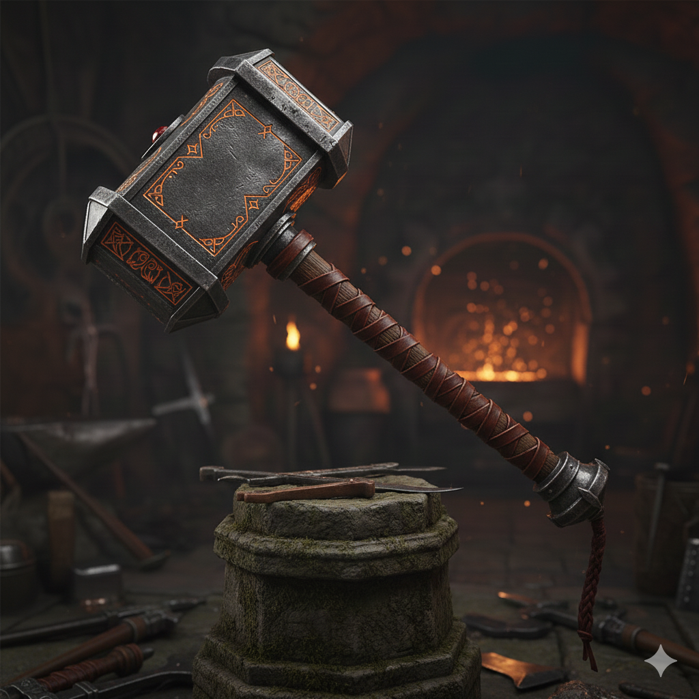

The Mjolnir:
Mjolnir (Thor's Hammer) Meaning: "Mjolnir" is derived from the Old Norse word mjölnir, which means "the grinder" or "the crusher." It is the hammer of Thor, the Norse god of thunder.
Our world has certain artifacts to subsist in it.
Mjolnir (Thor's Hammer) Meaning: "Mjolnir" is derived from the Old Norse word mjölnir, which means "the grinder" or "the crusher." It is the hammer of Thor, the Norse god of thunder.
Angrboða's Sword (Angrist) Meaning: The sword’s name comes from Angrboða, the name of the giantess who was Loki’s consort and the mother of three monstrous children: the wolf Fenrir, the serpent Jörmungandr, and the half-dead, half-living Hel.
Durin's Axe (Dwarven Weapon) Meaning: The axe is named after Durin, one of the legendary dwarven kings in Norse mythology, a figure of wisdom and skill in craftsmanship.
Draupnir (The Ring of Odin) Meaning: Draupnir comes from the Old Norse drápa, meaning "drip" or "droplet." It is a ring that creates more gold rings every ninth night.
Gungnir (Odin’s Spear) Meaning: Gungnir comes from Old Norse göng (meaning "to wave" or "to move in a certain direction"), signifying a spear that always hits its mark.
Brisingamen (Freya’s Necklace) Meaning: Brisingamen means "the necklace of the Brisings," where Brising refers to a group of four dwarven smiths who crafted it.
Skidbladnir (The Ship of the Gods) Meaning: Skidbladnir translates roughly to "the ship with many planks" or "the ship that folds."
Gullinbursti (The Golden Boar) Meaning: Gullinbursti translates to "the golden-bristled" boar, a reference to its shining golden mane.